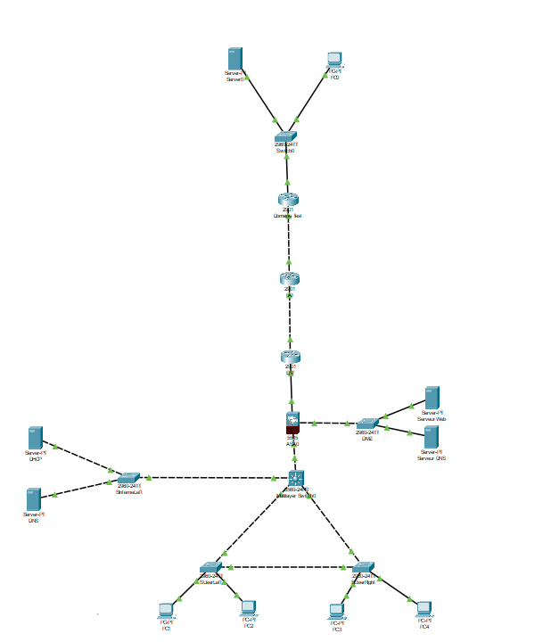

Ce projet de groupe a pour objectif de répondre aux besoins informatique d'une petite structure en créant une infrastructure réseau faible et sécurisée, capable de répondre aux besoins de la structure.
Après avoir établi l'objectif de notre travail, nous nous sommes répartis les missions et ma contribution à ce projet a consisté à configurer les ACL sur les routeurs ainsi que le pare-feu.
Les compétences acquises par ce projet sont :